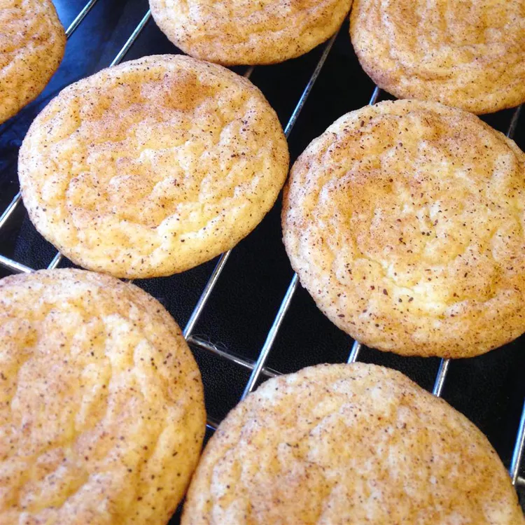

Grandma Ruth's Easy Snickerdoodle Cookies
The history of Snickerdoodle cookies is a fascinating journey that combines cultural influences and culinary creativity. Snickerdoodles are a beloved type of cookie known for their distinctive cinnamon-sugar coating and soft, chewy texture. While the exact origins of the Snickerdoodle are not fully documented, their history is rich and intriguing. The Snickerdoodle's beginnings are often traced back to German and Dutch immigrants who settled in the United States during the 18th and 19th centuries. The name "Snickerdoodle" itself has a whimsical and playful sound that reflects the lighthearted nature of the cookie. It's believed that the word "snickerdoodle" may have been derived from a combination of German and Dutch words, although the exact etymology remains uncertain. One theory suggests that Snickerdoodles evolved from German "Schneckennudeln," a type of cinnamon-flavored pastry or sweet roll. The immigrants' baking traditions and recipes likely influenced the creation of the Snickerdoodle as we know it today. Over time, these recipes were adapted and transformed by American bakers, leading to the distinct characteristics of the Snickerdoodle. The defining feature of Snickerdoodles is their cinnamon-sugar coating, which creates a slightly crunchy exterior that contrasts with the soft interior. The cookies are often made with a simple base of butter, sugar, and flour, along with the key ingredient: cream of tartar. Cream of tartar, an acidic byproduct of winemaking, reacts with baking soda to give Snickerdoodles their characteristic puffy texture.
